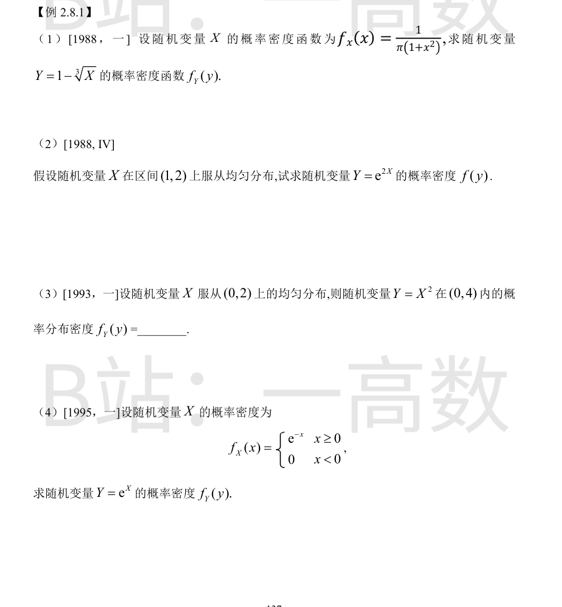
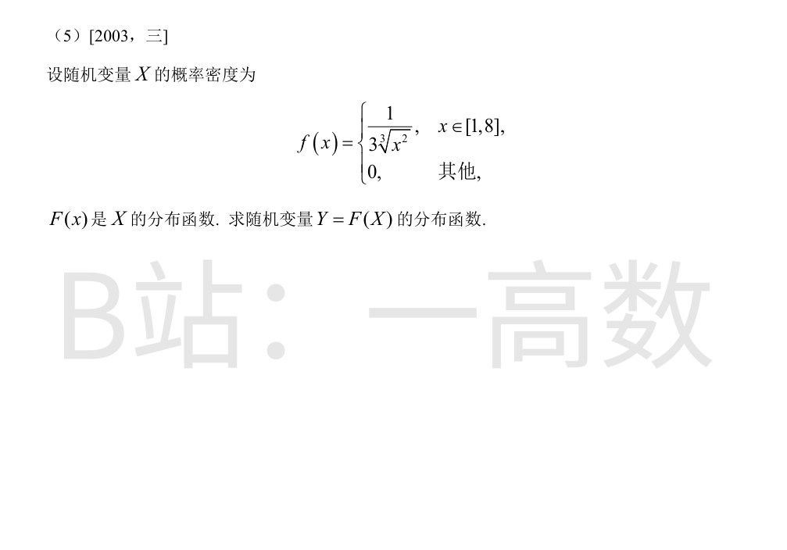
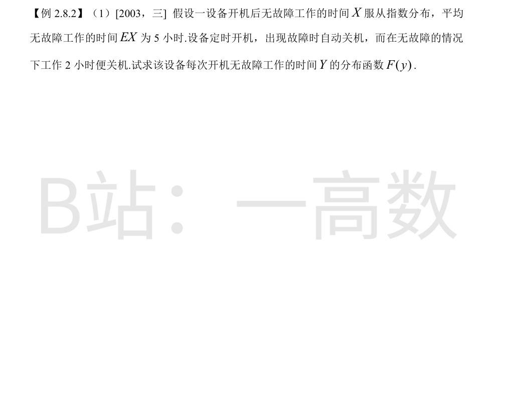

$y=1-x^{1/3}$ 严格单调（$y'<0$，$x=0$ 处除外的单点不影响），反函数存在唯一：
$$x=(1-y)^3,\qquad \frac{dx}{dy}=-3(1-y)^2,\qquad \Big|\frac{dx}{dy}\Big|=3(1-y)^2.$$
由单调变换公式：
$$f_Y(y)=f_X\big((1-y)^3\big)\Big|\frac{dx}{dy}\Big|=\frac{3(1-y)^2}{\pi\big[1+(1-y)^6\big]},\qquad y\in\mathbb{R}.$$
检验：$\int_{-\infty}^{+\infty}f_Y\,dy=\int_{-\infty}^{+\infty}f_X\,dx=1$。
$f_X(x)=1$（$1<x<2$）。$y=e^{2x}$ 严格增，值域 $(e^2,e^4)$，反函数 $x=\dfrac12\ln y$，$\dfrac{dx}{dy}=\dfrac{1}{2y}$。
$$f_Y(y)=f_X\Big(\frac12\ln y\Big)\cdot\frac{1}{2y}=\frac{1}{2y},\qquad e^2<y<e^4;$$
其他处为 0。检验：$\int_{e^2}^{e^4}\frac{dy}{2y}=\frac12(4-2)=1$。
$f_X(x)=\dfrac12$（$0<x<2$）。$y=x^2$ 在 $(0,2)$ 上严格增，反函数 $x=\sqrt y$，$\dfrac{dx}{dy}=\dfrac{1}{2\sqrt y}$。
$$f_Y(y)=f_X(\sqrt y)\cdot\frac{1}{2\sqrt y}=\frac12\cdot\frac{1}{2\sqrt y}=\frac{1}{4\sqrt y},\qquad 0<y<4.$$
检验：$\int_0^4\dfrac{dy}{4\sqrt y}=\dfrac12\sqrt y\Big|_0^4=1$。
$y=e^x$ 严格增；$x\ge0\iff y\ge1$。反函数 $x=\ln y$，$\dfrac{dx}{dy}=\dfrac1y$。
$$f_Y(y)=f_X(\ln y)\cdot\frac1y=e^{-\ln y}\cdot\frac1y=\frac1y\cdot\frac1y=\frac{1}{y^2},\qquad y>1;$$
$y\le1$ 时为 0。检验：$\int_1^{+\infty}y^{-2}dy=1$。
先求 $F$：当 $1\le x\le8$，
$$F(x)=\int_1^x\frac{dt}{3t^{2/3}}=\int_1^x\frac13 t^{-2/3}dt=\Big[t^{1/3}\Big]_1^x=x^{1/3}-1.$$
且 $F(1)=0$，$F(8)=2-1=1$，$x<1$ 时 $F=0$，$x>8$ 时 $F=1$。
$Y=F(X)=X^{1/3}-1\in[0,1]$，$F$ 连续且严格增，对 $0\le y\le1$：
$$F_Y(y)=P\{X^{1/3}-1\le y\}=P\{X\le(1+y)^3\}=F\big((1+y)^3\big)=\big((1+y)^3\big)^{1/3}-1=y.$$
故 $F_Y(y)=0\ (y<0)$，$y\ (0\le y\le1)$，$1\ (y>1)$，即 $Y\sim U(0,1)$（概率积分变换）。

$EX=5\Rightarrow$ 指数分布参数 $\lambda=\dfrac15$，即 $F_X(x)=1-e^{-x/5}\ (x\ge0)$。
$Y=\min(X,2)$，分段：
- $y<0$：$F(y)=0$；
- $0\le y<2$：$\{Y\le y\}=\{X\le y\}$，故 $F(y)=1-e^{-y/5}$；
- $y\ge2$：$Y\le2\le y$ 必然成立，$F(y)=1$。
即
$$F(y)=\begin{cases}0, & y<0,\\1-e^{-y/5}, & 0\le y<2,\\1, & y\ge2.\end{cases}$$
注：$F$ 在 $y=2$ 处有跳跃（$F(2^-)=1-e^{-2/5}<1$），$Y$ 为连续型与单点分布的混合，非连续型变量。